通过结构体创建。结构名称为S-角色基础属性、S-角色基础状态
注意：最大生命值属于属性，当前生命值属于状态。
在角色蓝图中添加组件：角色属性。组件为AC-角色属性（后面给出）、AC-角色对局状态
当角色购买装备时，调整基础属性值
当角色受到影响时，调整基础状态值
时刻关注角色的状态值，除非buff状态，否则状态值不应该大于属性值。
在基础属性、基础状态之外还会有额外的属性和状态。待设计。
在lol的英雄属性的基础上，添加下列属性
元素属性
姓名：出于虚幻引擎数据表格特点，给角色基础属性加上一个成员：姓名。同样的，行名称在定义数据表格的时候也需要赋值为姓名。姓名为字符串类型
角色对局状态包括角色属性和角色状态两个功能
同时实现血条显示功能。
从历史版本上，AC-角色对局状态出现之前有两个ActorComponent来实现AC-角色对局状态的功能：
AC-角色对局状态和AC角色属性
AC-角色对局状态有的东西
变量：角色状态（S-角色基础状态）、角色属性（S-角色基础属性）。可编辑实例，生成时公开
函数：角色属性初始化、消耗生命值、消耗法力值、恢复生命值、恢复法力值
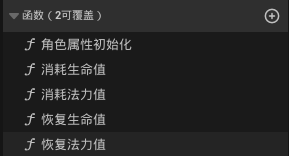事件分发器
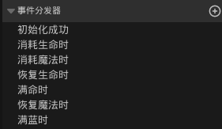实现5个函数。部分函数给数据比较麻烦，会创建几个局部变量帮助理线
在AC中写角色初始化函数
根据数据表格中写的角色属性对角色模板中的角色属性组件中的值进行赋值。
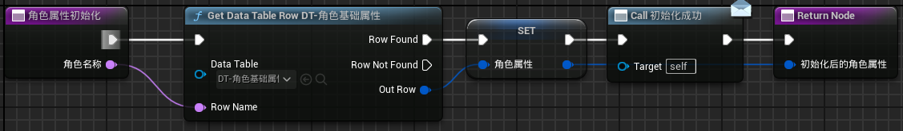四个函数是有区别的
区别是：消耗生命值可以减到负数，消耗法力值不能减到负数。而且每次使用技能时还要判断当前法力值是否大于所需消耗生命值。所以消耗法力值在最开始就应该进行一个判断，并返回一个bool值表示能否使用该次技能。
我们希望玩家在受到伤害时调用一个事件，即创建一个事件分发器，命名为“触发伤害时”，在设置完当前生命值后调用这个事件分发器。
（事件分发器是Actor组件与使用组组件的Actor之间通信的方式。在Actor组件中调用一个事件（分发器）就是再说：这件事情触发了。但是Actor组件本身并不决定在受到伤害时除了减少生命值之外应该做什么）
同时我们再创建一个事件分发器，叫做“死亡时”，当当前生命值小于等于0时触发调用。
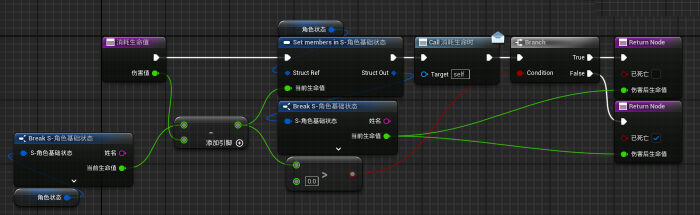 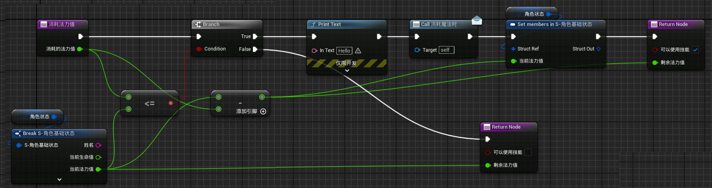 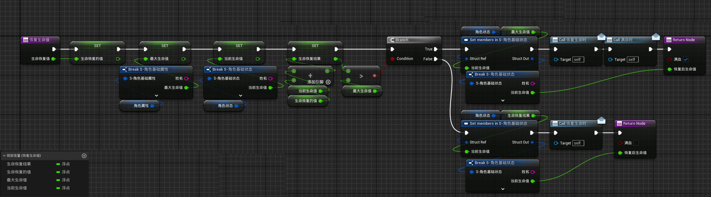 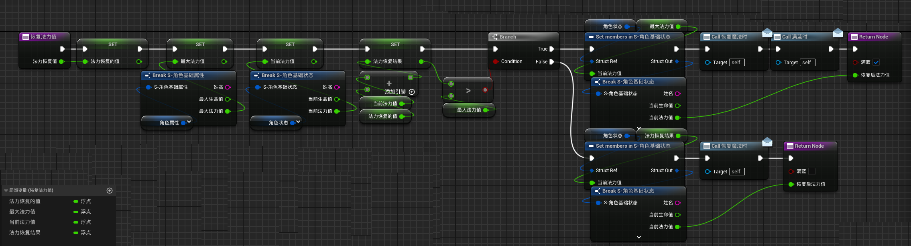在事件图表中，EventBeginPlay时，创建控件组件。
在AC中GetOwner，也就是得到AC的拥有者，对拥有者Add Widget Component，Class选择WidgetComponent，也就是控件组件。现在这个东西就等价于在Actor中创建一个Widget组件。
然后我们设置Widget组件的属性
位置坐标设置为Actor的坐标的上面来将其显示在头部，然后设置绘制大小（SetDrawSize），设置控件空间（SetWidgetSpace）为屏幕，并关闭碰撞（SetCollisionEnabled）
回到AC，调用CreateWidget来创建widget，然后SetWidget。SetWidget的Target为AddWidgetComponent的返回值，SetWidget的Widget为CreateWidget的返回值。
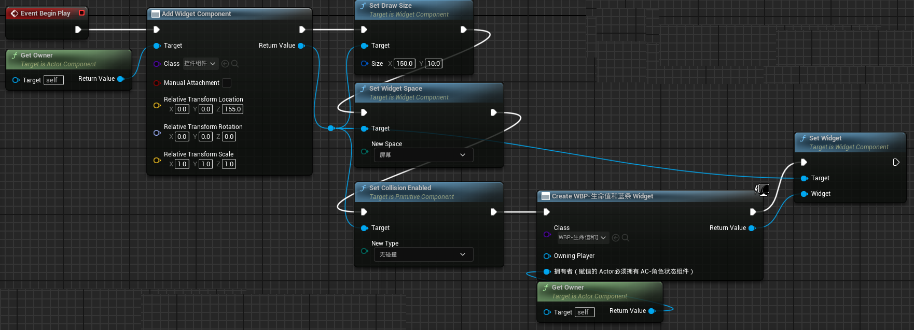现在创建一个非常简单的Widget，命名为“WBP-生命值和蓝条”，在画布面板下只有两个ProgressBar，画布面板和进度条同样大小。进度条都设置为是变量。
接下来设置数值绑定，也就是Widget如何与Actor组件进行通信。
WBP-生命值和蓝条中，在EventConstruct时，实现对图示四个变量的赋值
这时，我们在CreateWidget时只需要提供拥有者一个参数。其他我们需要的参数可以创建变量来通过拥有者提供
首先创建变量
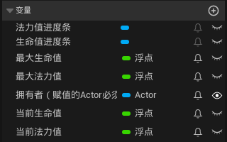 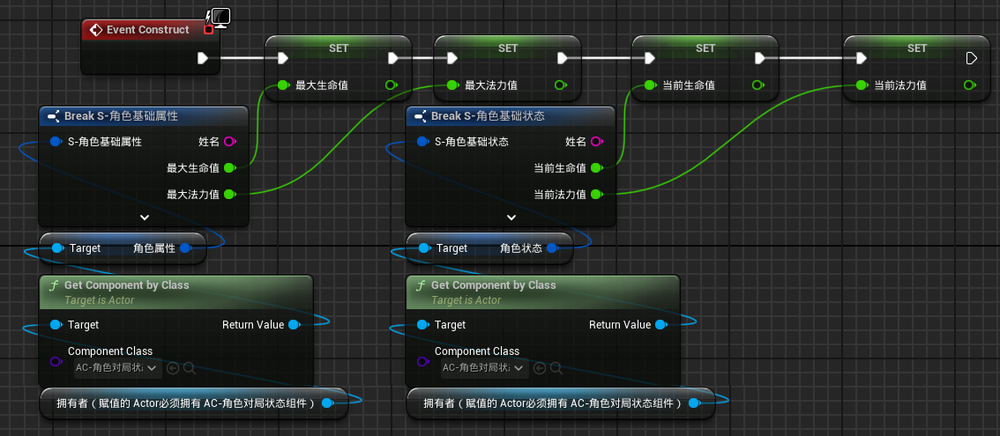同时对进度条的进度值进行数值绑定。
接下来点击进度条（生命值进度条或法力值进度条。这里以生命值进度条为例）
在细节--进度--百分比中选择绑定
我们会在AC中CreateWidget，在CreateWidget节点上进行WBP相关变量的赋值。拥有者会由AC中GetOwner函数提供。
回到WBP继续进行绑定，我们在GetComponent后得到了AC-角色对局状态，就可以从他的返回值处get 角色状态，将角色的 当前生命值/最大生命值 ，将结果输出给进度条进度值。
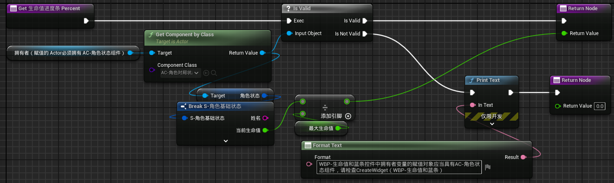 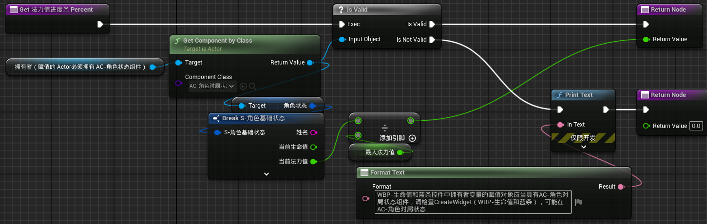现在关注BP角色模板，添加AC角色状态组件，关注细节中的默认值。
在这里事件分发器也被视为变量。
可以在Actor中点击组件中的角色对局状态组件，在细节中找到我们的事件分发器事件。
BP-角色模板的构造函数中，实现初始化
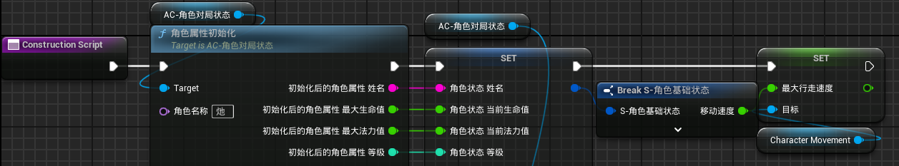旧版本解决方案(已弃用)注意事项
在WBP中我们会Get拥有者的Component by Class，而且get的是AC-角色对局状态。但是拥有者的变量类型是Actor对象引用，而不是BP-角色模板的对象引用。所以，如果我们给CreateWidget的拥有者参数的赋值，它没有AC-角色对局状态，则调用失败。所以在进度条绑定的时候，我们应该对GetComponentByClass的返回值进行一次IsValid判断。同时我给“拥有者”变量的名称加了说明，以致于在CreateWidget时能够正确赋值。
数值绑定方案2（已弃用）：
弃用原因：自己的方案不用写事件分发器和Widget的EventConstruct
参考视频：
https://www.bilibili.com/video/BV1ygHeeSEXv/?spm_id_from=333.999.0.0&vd_source=79fbe818ff96aae3677e123f0374bd91
在WBP的图表中
在EventConstruct时，对进度条的进度进行SetPersent。Persent值为传入的当前值/最大值，来初始化进度条的百分比。
然后GetComponentByClass来获取拥有者的AC-角色属性和AC角色状态，
通过Bind Event to 触发伤害时，来实现Actor组件和使用的Actor之间的通信。（是靠事件分发器实现的）这样，每次调用“触发伤害时”事件时，让血条来更新。
首先角色有个“将旋转朝向运动”，勾选。
然后我们实现一个功能，使用手柄右摇杆或上下左右键实现角色朝向设置
而且在运动期间可以设置角色朝向。
在函数库中创建函数，命名为“设置角色朝向SetActorOrientation”。设置角色朝向的核心就是SetActorRotation，所以有两个参数：设置旋转的目标和Orientation
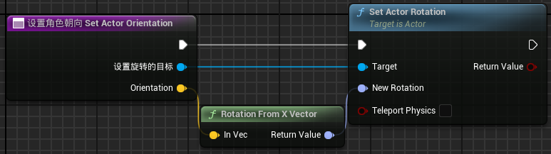功能实现后，给上帝视角wasd控制方式加上“IA-旋转朝向”的输入操作，将值类型设置为Vector2D。然后编辑上帝视角wasd的输入映射情境
有必要陈述一下：
我们给IA-上帝视角wasd旋转朝向设置为Vector2D，在IMC中添加的时候有一点需要注意：
键盘上的方向键和手柄上的右摇杆，
左右是ActionValueY的输出值，右为1，左为-1。这里键盘和手柄一致
上下则不同。作为ActionValueX的输出值，对于键盘来说，上为1，下为-1；手柄则相反，上为-1，下为1。所以我们设置角色旋转按键时，在设置游戏手柄右摇杆Y轴时添加一个否定的修改器。
同时谨记区分，游戏手柄Y轴输出的是ActionValueX，X轴输出的是ActionValueY。
（这里做说明，向上键不加修改器，向下键加一个否定，向右键加一个拌和输入轴值，向左加一个否定加一个拌和，手柄Y轴加一个否定，手柄X轴加一个拌和输入。）
（所以手柄Y轴输出的是ActionValueX。如果向右不加修改器，向上加拌和输入轴值，那么手柄Y轴输出的就是ActionValueY）
（同时区分手柄右摇杆和左摇杆的Y轴输出。他们是相反的。）
然后就可以使用功能。
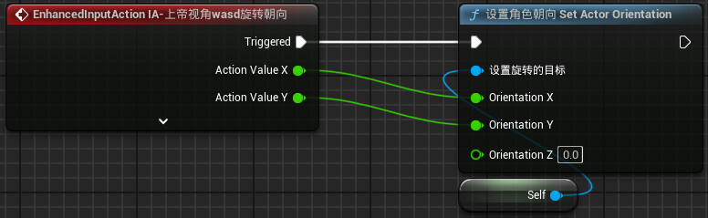完全可以在运动期间可以设置角色朝向。
接下来实现TPS的视角朝向
TPS因为操作的特性：
角色移动是根据摄像机方向进行移动的，并不是根据角色方向
而且TPS并不需要旋转摄像机（移动手柄）的时候就设置朝向
在TPS输入模式下创建IA-TPS转动摄像机，值类型为Vector2D
IMC中设置IA的按键绑定，
选择“鼠标X、Y”，修改器选择盲区
选择“游戏鼠标右摇杆X、Y轴”
无论鼠标还是手柄，Y轴没有修改器，X轴为拌和输入轴值，进行实验
鼠标往上，ActionValueX=1，鼠标往下，ActionValueX=-1，
鼠标往左，ActionValueY=-1，鼠标往右，ActionValueY=1，
手柄往上，ActionValueX=-1，手柄往下，ActionValueX=1，
手柄往左，ActionValueY=-1，手柄往右，ActionValueY=1，
所以要给右摇杆的Y轴加一个否定的修改器
我们要通过鼠标对弹簧臂进行SetWorldRotation。我们不能直接将ActionValue的值赋给SetWorldRotation。因为手柄摇杆回归中心、鼠标从运动到停止的时候，ActionValue的值会变小，也就是会把我们动摇杆期间的赋值又给回去。
（弹簧臂不要勾选继承yaw）
所以我们要把鼠标（右摇杆）的输出值和弹簧臂的GetWorldRotation进行一次累加，并将累加值赋值给SetWorldRotation。
摄像机的WorldRotation是Yaw范围在（-180，180），pitch是（-90，90）内的可能值。所以在累加的时候，pitch有可能会超出90这个范围。所以要对Pitch的值取一个小于某个数的值。
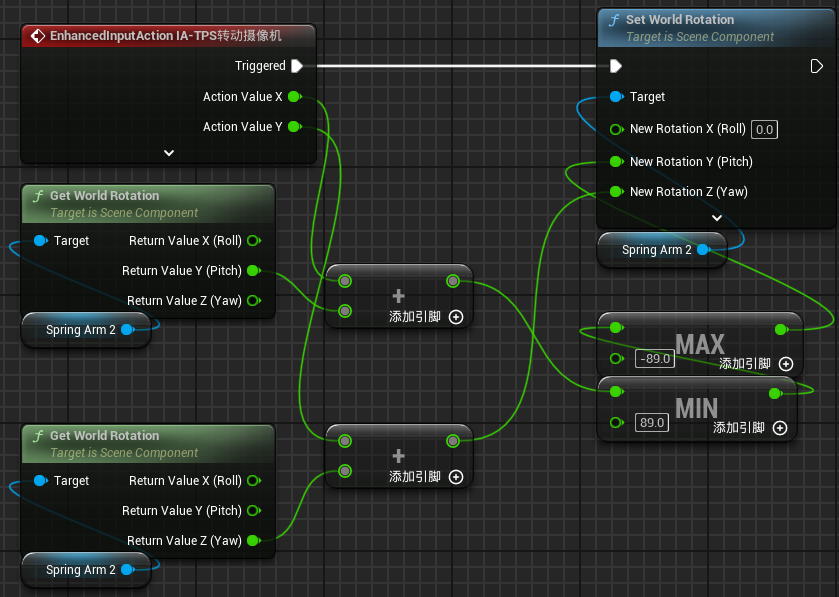成功实现。
接下来重写移动逻辑。原来的移动逻辑就是将wasd的ActionValue进行角色的世界Movement Input。也就是说，现在的移动逻辑，即使你面朝任意一个地方，进行前向移动时都是向着世界的X轴前进。
现在我们要根据摄像机的WorldRotation对角色的移动方向进行设置。
有个严重问题：虽然摄像机看到的世界方向是不变的，但是当Actor转动的时候弹簧臂的GetWorldRotation的yaw值是变的
但是经过相减之后，就得到了我们希望的不变的摄像机WorldRotation
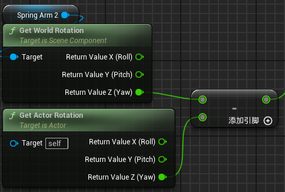我们可以将这个值进行SetActorRotation试验一下
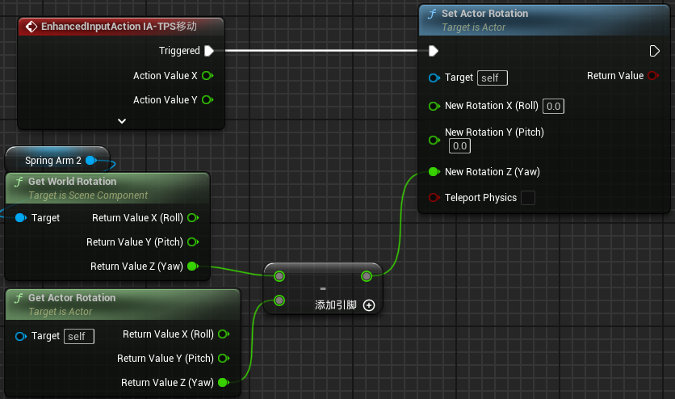我们后面并不会这么用移动。因为第三人称转动摄像机时并不应该SetActorRotation。这里只是一次试验
问题的关键是摄像机的GetWorldRotation是随着Actor的角度而改变的。我们为了获得真正的不变的GetWorldRotation，应该用WorldRotation - ActorRotation。这样得到的就是不变的WorldRotation。
我们可以将它写成一个函数，命名为“第三人称相机不变世界旋转 Third Person Camera Truth World Rotation”
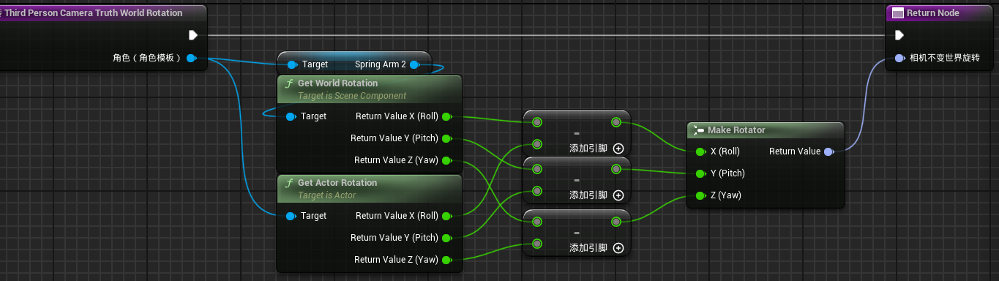然后使用该函数，得到相机的真实世界旋转。
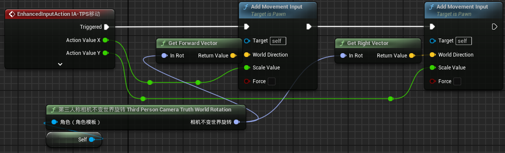我们也可以修改下函数，让这个函数可以更具有普遍性。
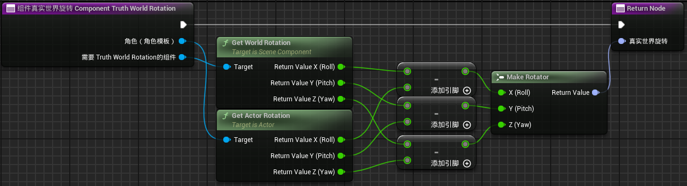 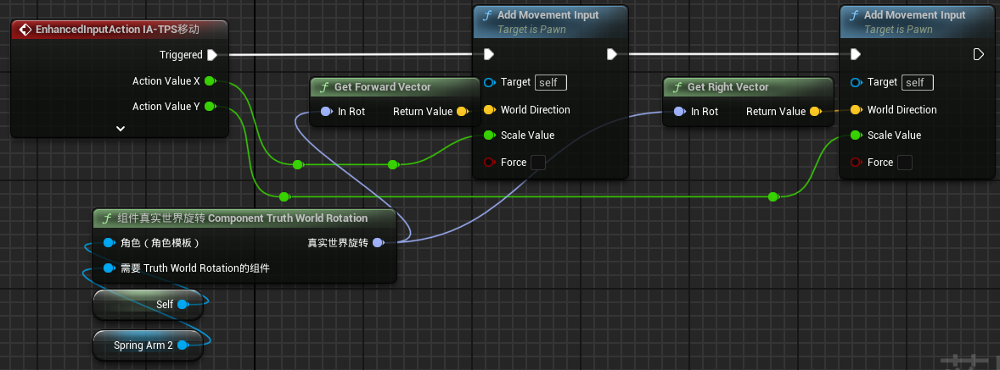后续的东西，特别是技能的释放等，默认方向为角色朝向（第三人称呢？），主动方向应当SetActorOrientation。一般来说，第三人称下，在移动的时候就通过“将旋转朝向运动”进行角色转向了。
当第三人称下释放技能时，如果需要向相机的方向或其他组件的方向释放技能，则依然需要组件真实世界旋转ComponentTruthWorldRotation函数来SetActorOrientation。所以这种情况下，角色技能的释放方向依然是角色的朝向。p>
后面会用到大量的找到角色状态节点族，所以创建函数实现效果
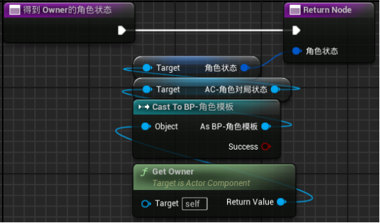普攻：散弹水球
创建Actor类蓝图，在蓝图中添加三个组件：Cascade、Collision、发射物移动组件，将发射物移动组件的默认的重力去掉。
创建两个变量：移动速度和移动距离，可编辑实例、生成时公开。
然后在水球创建的时候完成下图的内容
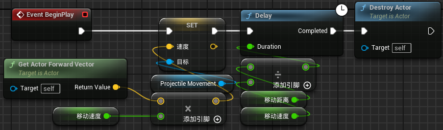这样就完成了单个水球的创建
接下来实现散弹水球的效果。将生成速度向量的Yaw进行一个偏移即可。
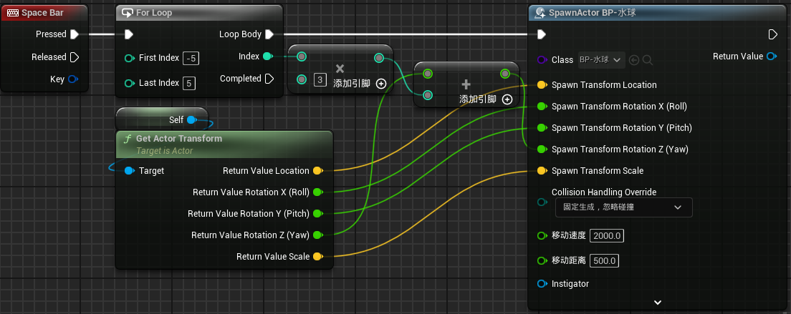验证完毕，接下来实现控制输入（手柄的扳机键是0到1的输入）
角色技能默认统一按照角色朝向。因为技能向角色朝向释放，所以除去RTS操作模式，另外两个操作模式的技能释放可以相同。
角色有6个技能（包括普攻）
上帝视角wasd：
右扳机、Space：普攻
左扳机、左Shift：③位移技能
左肩键【：战略技能④
右肩键、】：战略技能⑤
A、Q：①技能
B、E：②技能
创建上述的输入操作和修改输入映射上下文。值类型为bool
（默认不支持扳机键按到一半的情况。如果有的话，电脑玩不了了）
完成上述内容之后，我们会用这些按键来触发使用技能的自定义事件。为了能更方便的管理技能属性（冷却时间等），创建AC-技能组件
首先在AC中实现事件分发器
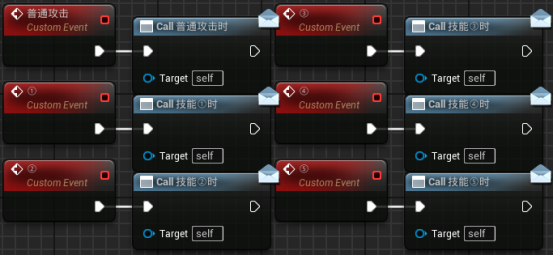 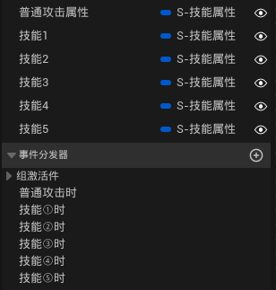然后在BP-角色模板的AC的细节中找到创建事件节点。
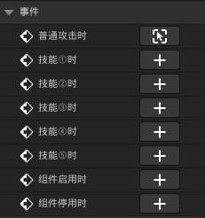这里以普通攻击为例，
首先我们希望能够普通攻击。很简单。增强输入的普通攻击按键事件触发后直接调用AC中的自定义事件即可。
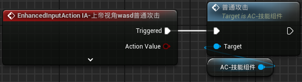触发攻击事件后，会Call普通攻击时，也就是AC的细节中的普通攻击时。创建该事件节点，来实现普通攻击的实际效果。
我们创建普通攻击时事件。我们要在这个事件中实现普通攻击的效果，也就是霰弹水球枪
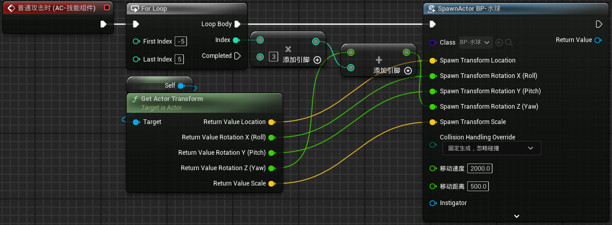前摇和后摇由动画系统完成，冷却和耗蓝由AC来完成。
现在释放普通攻击，会发现完全没有间隔。前后摇我们先不做，我们先实现冷却和耗蓝。
假设普通攻击也有冷却和蓝耗。
创建结构，命名为S-技能属性。在里面定义技能的属性。
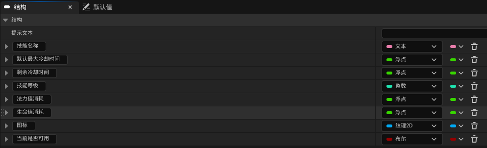（冷却期间或某些状态下技能不可用）
（技能当然也有其他属性，比如“是位移技能”“层数”。这类属性没有在图片中展示）
在AC-技能组件中创建6个变量，变量类型都是S-技能属性，可编辑实例、生成时公开.
现在只处理普通攻击，对普通攻击的属性进行设置。
首先对技能进行初始化。因为技能和角色是绑定的，所以在角色的构造函数中进行初始化。
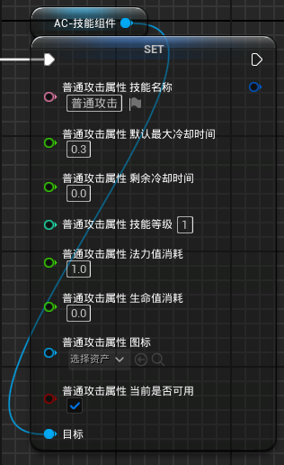然后在AC中创建函数实现技能是否可用的判断
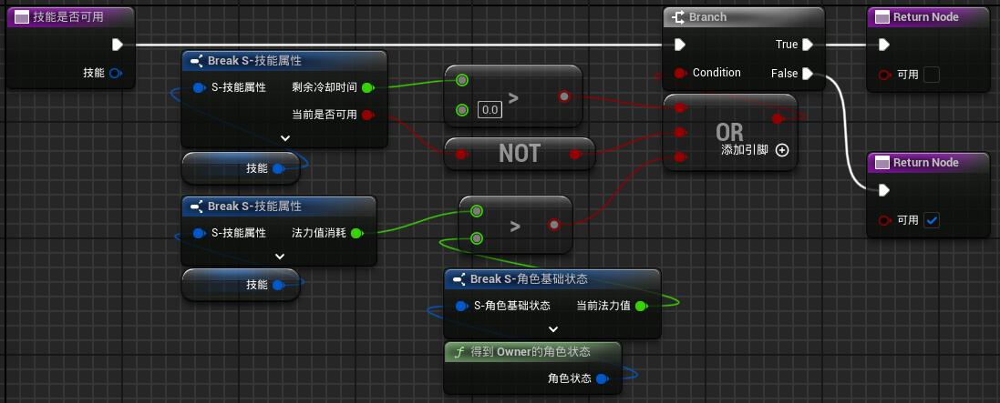然后在使用普攻时先判断技能是否可用，如果可用再使用技能，并减少法力值和控制冷却时间。
我们要在技能组件中实现技能释放和技能冷却的处理。
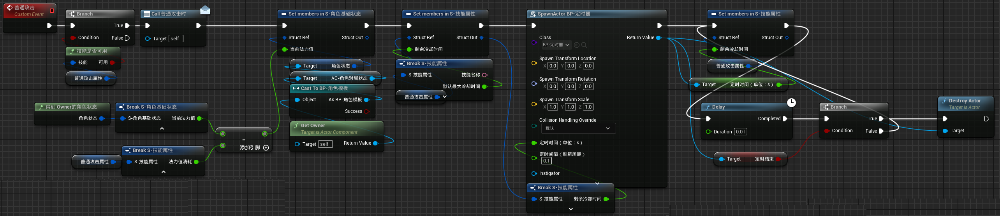这个东西貌似不能封装成函数。不过也没必要，因为每个技能几乎都是按照这样的流程处理的，而且后面都会继承到。
也就是说，6个技能（甚至于装备的主动技能）我们都要这样处理
下面简单实现普攻验证
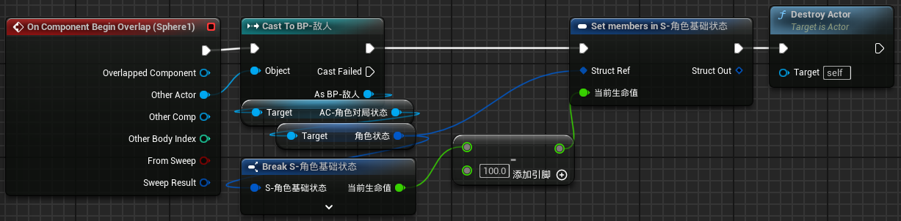完美实现
这样设计的技能框架
英雄技能是每个角色特定的能力，所以可以直接和角色绑定
AC-技能组件中实现6个英雄技能的帧处理。
角色的构造函数中实现自身技能的初始化
在角色的事件图表中实现角色自己技能的效果，方式就是在组件中通过AC-技能组件的事件分发器
使用技能时，在角色蓝图中通过增强输入事件触发AC中的使用技能事件，进而通过事件分发器来真正的使用技能
如果后续重做英雄，需要更新角色的构造函数。